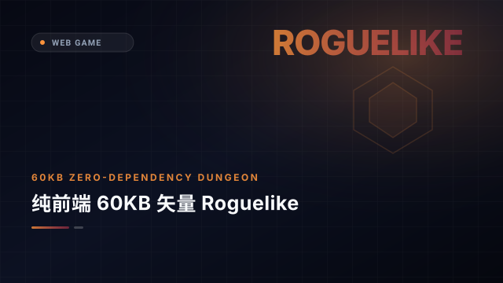

纯前端 60KB 矢量 Roguelike：零依赖地牢引擎实现手记
不引入任何图片、音频或第三方框架，仅凭单个 60KB 网页文件实现完整的地牢 Roguelike 游戏：用数学公式实时画角色与地图，用声波合成音效，并用轻量算法支撑随机地图与视野迷雾。

挑战：零外部二进制依赖的轻量引擎探索
现代 Web 游戏开发常高度依赖重型工作流与庞大素材资源。本项目旨在探索一种极端轻量化的工程实现：不引入任何外部构建工具、零外部图片与音频资源，仅在单个 HTML 文件中，通过 Canvas 代码绘图与 WebAudio 实时合成音效，探索“零外部素材、纯代码驱动”的轻量游戏方案。
全套代码压缩至 60KB 左右，无需任何外部网络请求，本地双击即可运行。
方案：程序化数学逻辑替代外部媒体资产
- 程序化矢量绘制：英雄、怪物与地下城障碍物均在代码层通过 Canvas 贝塞尔曲线与圆弧数学公式动态绘制，利用正弦波模拟角色的呼吸起伏与攻击动态。
- WebAudio 实时物理波形合成：打击音效采用锯齿波配合快速衰减模拟清脆打击感，金币拾取采用双正弦波叠加，脚步声利用带通滤波白噪声模拟沙沙声，所有音效基于 WebAudio 原生合成。
- 确定性地牢生成与视野渲染：基于轻量 Mulberry32 伪随机算法生成地牢（同一颗随机种子总能复现相同地图）；结合 Bresenham 光线投射算法（从玩家位置向四周发射射线计算可见范围）实现战争迷雾（Fog of War），已探索区域保持环境暗显。
- 确定性回合调度：采用严格对称的回合制状态机（玩家静止则世界静止）；局外成长持久化至 localStorage，单局死亡与重开流程连贯自然。
核心难点与工程排障
- 合并同样式绘图，避免频繁切换画笔状态：早期每画一个格子或怪物都要调用一次
save/restore保存并恢复画布状态，在核显设备上开销很高、容易掉帧。后续改为按材质和颜色分组批量绘制，帧率稳定在了 60 FPS。 - 遵守 WebAudio 用户交互激活策略：现代浏览器要求必须由明确的用户手势激活音频上下文（AudioContext）。若未在首次交互时调用
audioCtx.resume()，首批音效会被静默拦截。 - 用最小生成树补齐房间连通性：纯随机生成的房间容易出现彼此隔绝的“孤岛”。引入最小生成树（MST）算法把所有房间连成一张无孤岛的网络后，再把关卡终点放在离起点步数最远的房间。
结论
做纯代码绘制的小游戏，核心是尽量减少 Canvas 状态栈的频繁进出，把相同样式的路径合并绘制。不用外挂素材，单靠几十 KB 代码合成声音与画面，也能做出手感扎实的地牢游戏。